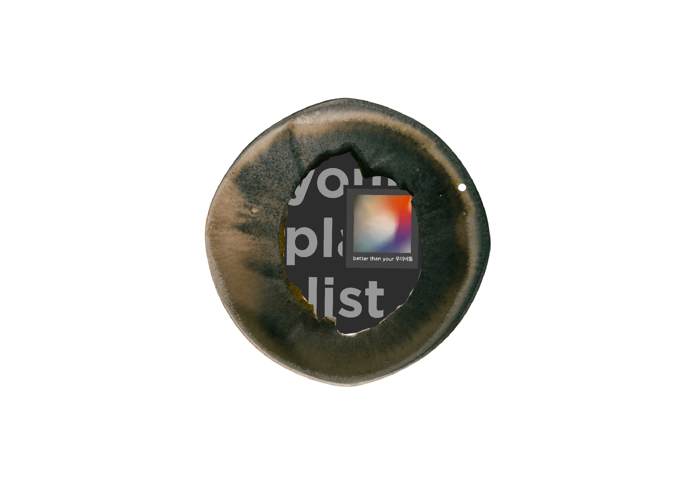
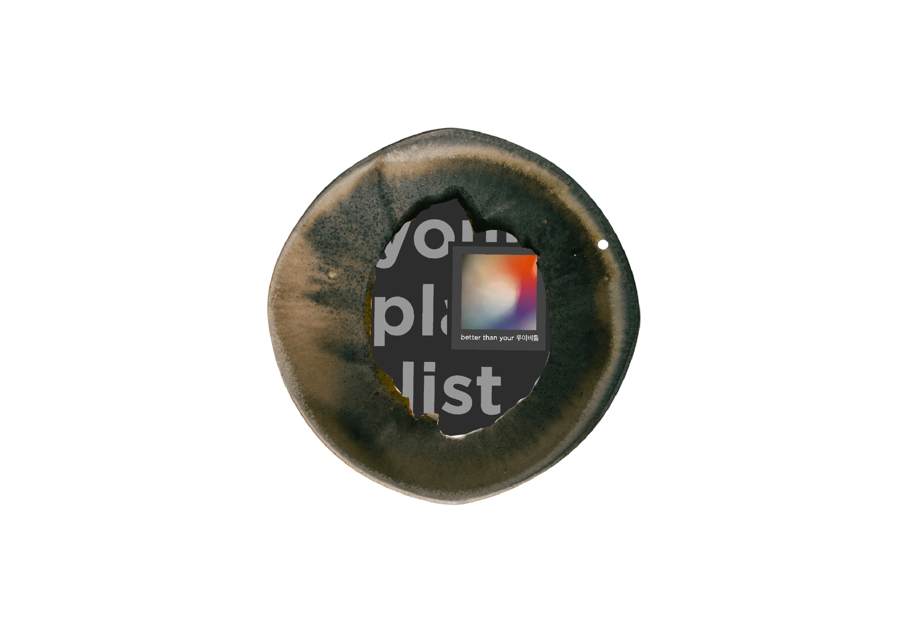

try our dish!
Lately, I have been creating a lot of playlists on Spotify.
The reason is because my friend told me that these playlists
are a way of documenting our lives at certain points in time.
Since this assignment is about creatively delivering messages to a
diverse range of audience, I utilized visuals of the playlist cover,
songs, and also the title text to convey
what each playlist
is about or describing the images.